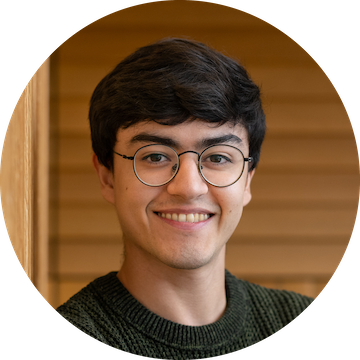

Hello! I'm a PhD candidate and NSF GRFP Fellow at the Princeton Neuroscience Institute, working in the lab of Carlos Brody. My research focuses on the mechanisms the brain uses to store and operate on continuous values in working memory.
Prior to my PhD, I did two years of post-bacccalaureate research in Earl Miller's lab at MIT. I contributed to work examining how cortico-thalamic dynamics mediate the brain's induction into anesthesia, and we were even able to show that stimulation of the thalamus can partially reverse anesthetic unconsciousness.
I did my undergraduate at Loyola University Chicago, where I studied markers of human brain aging with Robert G. Morrison and majored in physics.